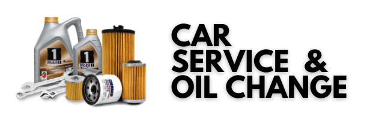
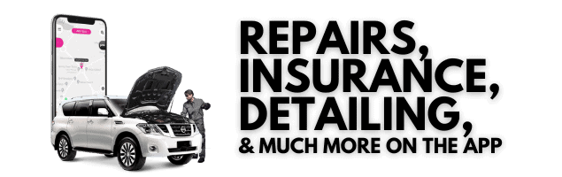
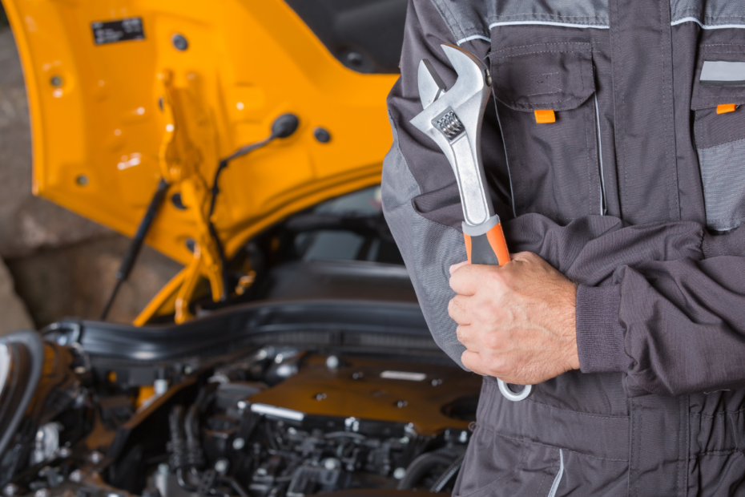
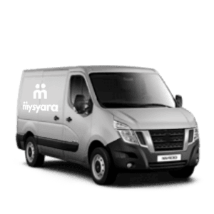
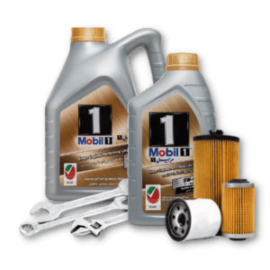
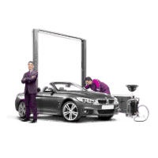
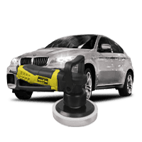
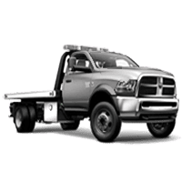
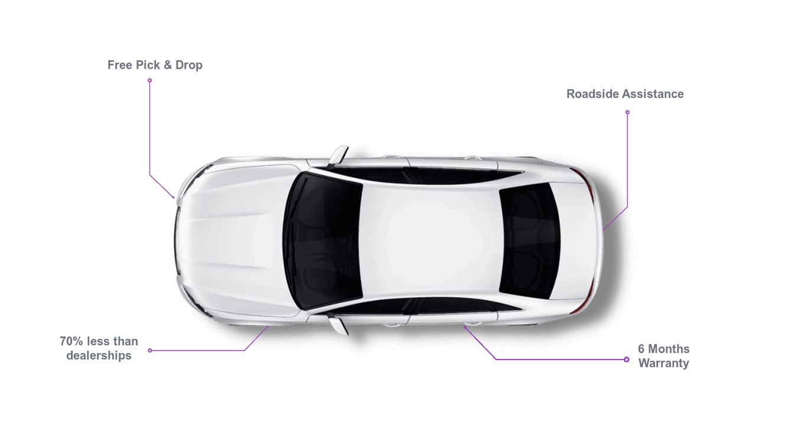
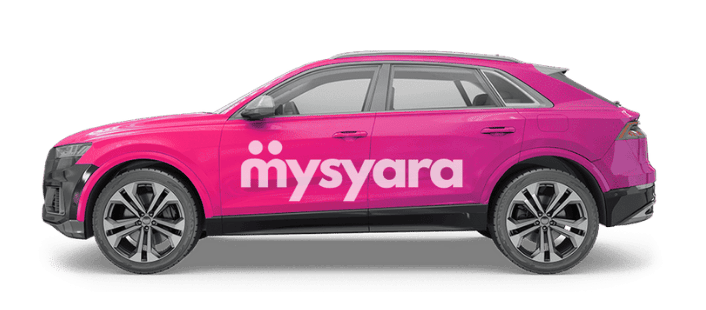

04 5490333
support@mysyara.com


Doorstep car servicing- convenient & reliable
Car maintenance is an essential aspect of car ownership, but it can often be a
hassle to
take your vehicle to
a
traditional service This is where Doorstep
Car Servicing comes in. At MySyara, we offer a
convenient
and
reliable Doorstep Car Servicing option that allows you to have your car serviced at your home or
office.

One of the main benefits of Doorstep Car Service is the convenience factor.
With
our service, you won’t have to take time out of your busy schedule to take your car
to a service
center.
Instead, our skilled technicians will come to you, so you can continue with your day while we take care
of
your
car’s maintenance needs.This is
particularly useful for people with busy work schedules, who may
find
it
difficult to find the time to take their car to a service center.
Another benefit of Doorstep Car Servicing is the cost savings. When you choose to have your car serviced
at
a
traditional service center, you may end up paying
more for the service than you would if you were
to
have
it done at your home or office. This is because traditional service centers have higher overhead costs,
which
they pass on to their customers. With MySyara, you can save money on your car’s maintenance while
still
receiving top-quality service.
Another big advantage of our Doorstep Car Servicing is the transparency and trust it provides. Our
service
advisor will explain the entire service process and we also
share the before and after images of
the
parts
serviced or replaced for your peace of mind.
In conclusion, Doorstep Car Service is a convenient and cost-effective alternative to a traditional car
service.
At MySyara, we offer a range of high-quality services
that are designed to meet the needs of our
customers.
So, if you’re looking for a reliable and convenient way to have your car serviced, give us a call and
let us
take
care of all your maintenance needs.
At MySyara, we use only the best quality parts and
lubricants
for Doorstep Car
Servicing. Our technicians are highly trained
and experienced in all aspects of car
maintenance,
and they
use state-of-the-art tools and equipment to ensure that your
car is serviced
to
the
highest standards.
In addition to standard services such as oil changes and
tune-ups,
we also offer a range of additional services, including
brake inspections, transmission
services, and much more.
Wide Range Of Car Services
Quick & easy to book a car service appointment online

Doorstep Mechanic
Oil Change
Car Repair
Detailing
Roadside AssistanceWhy Choose Us?
One-stop, Convenient, Quick, Affordable, Sustainable

How It Works
Book Car Service online in 3 simple steps
What Our Clients Say About Us
We believe every customer deserves a WOW, and always aim for that
I gave my Nissan Patrol to MySyara 2 days back for some maintenance work. They
were
so prompt
professional
and reasonable that it’s hard to believe. Entire operation was carried out by them in a spotless
manner,
right from picking up my car from my place, regular updates, suggestions and timely job completion
and
delivery. The team was simply superb, so courteous and friendly. Most definitely I will continue to
use
the
services of
MySyara always.
FAQs
Frequently Asked Questions
> Why should I choose MySyara? +
> What services does MySyara offer for Doorstep Car Servicing? +
> Can I schedule a Doorstep Car Servicing appointment at a specific time and location? +
> Is Doorstep Car Servicing more expensive than traditional car servicing? +
> Will my car be serviced by trained and experienced technicians?+
> Does MySyara use only high-quality parts and lubricants for Doorstep Car Servicing +
> What payment methods do you offer? +
> Is it safe to save my card details? +
> What is the MySyara Referral Program? +

04 5490333
support@mysyara.com
08:30am to 10:30pm
Sundays open
Servic Availability
UAE & Kerala

Car care on your schedule! Convient, high quality and
affordable
car services, built for the digital age.
We Accept
Download Now
|